Listen
Music for Video Games
UNMASCED
You can play the game here!
Space Runner (Rescore)
Stardew Valley (Rescore)
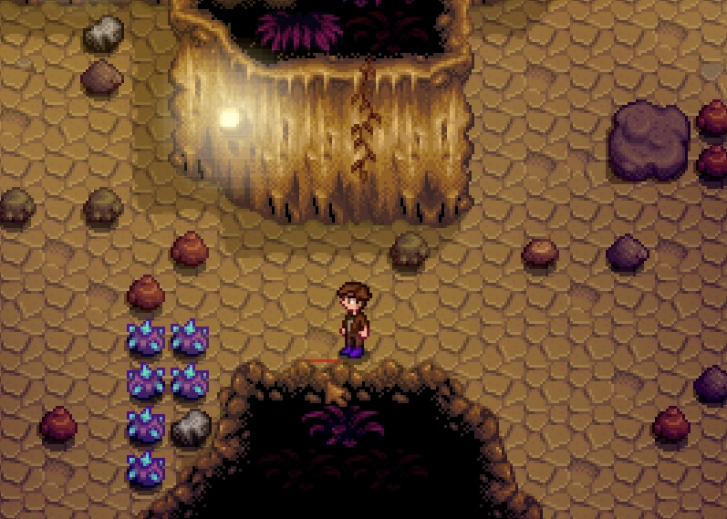
Calico Desert - Skull Cavern
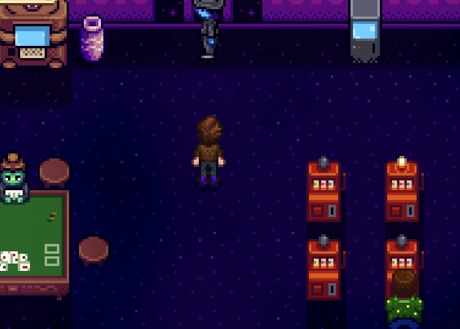
Calico Desert - Casino
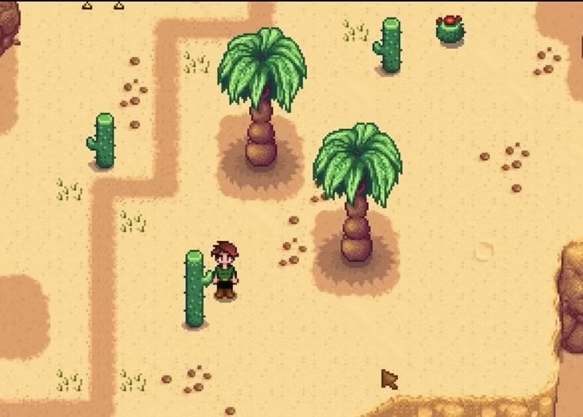
Calico Desert
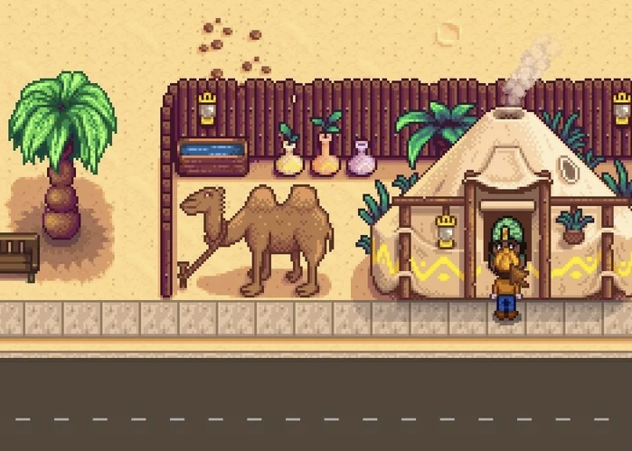
Calico Desert - Desert Trader
The Legend of Zelda: Link's Awakening HD (Rescore)
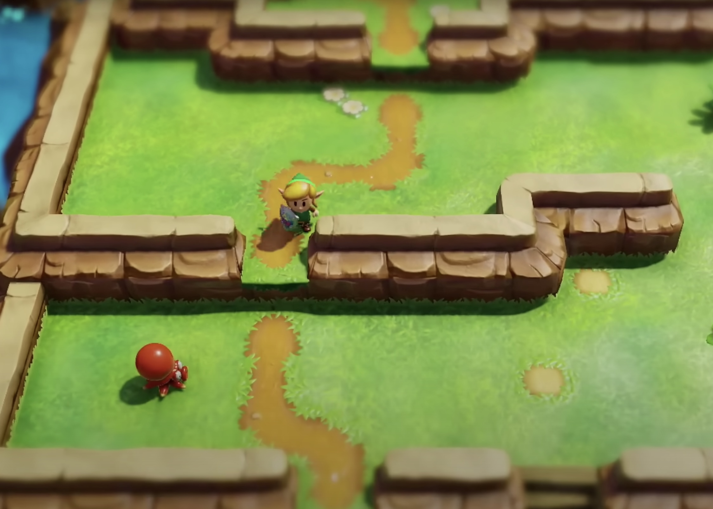
Sword Search
Hollow Knight (Rescore)
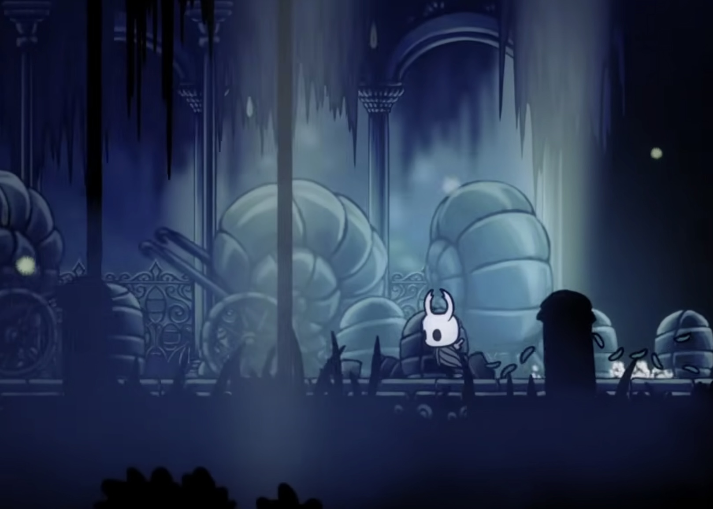
Exploration
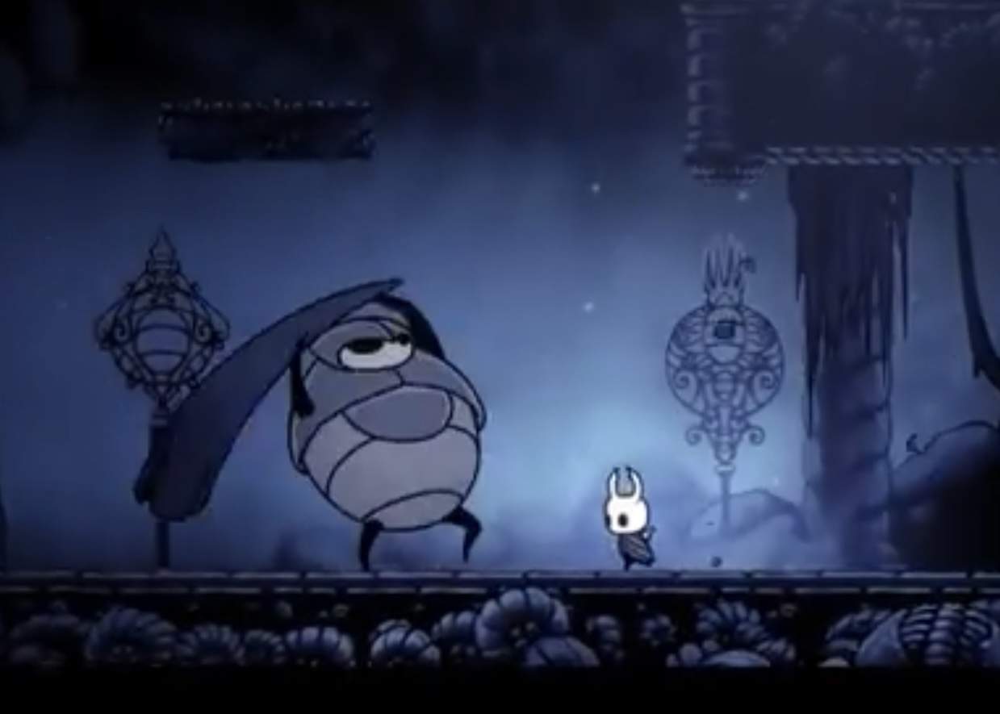
Boss
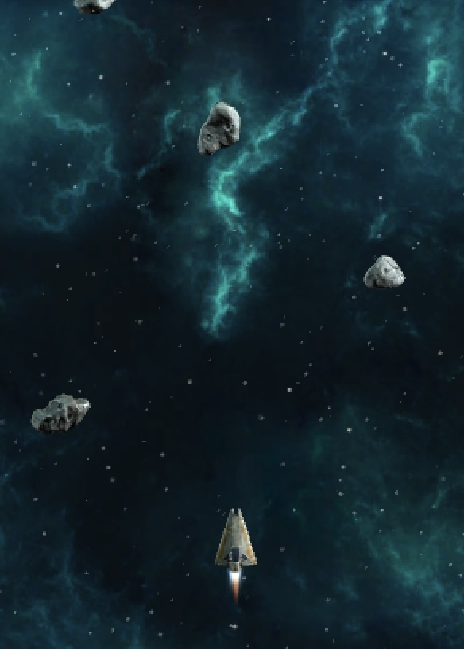
Space Runner (Rescore)
Exploration, State 1
Exploration, State 2
Exploration, State 3
Compositions
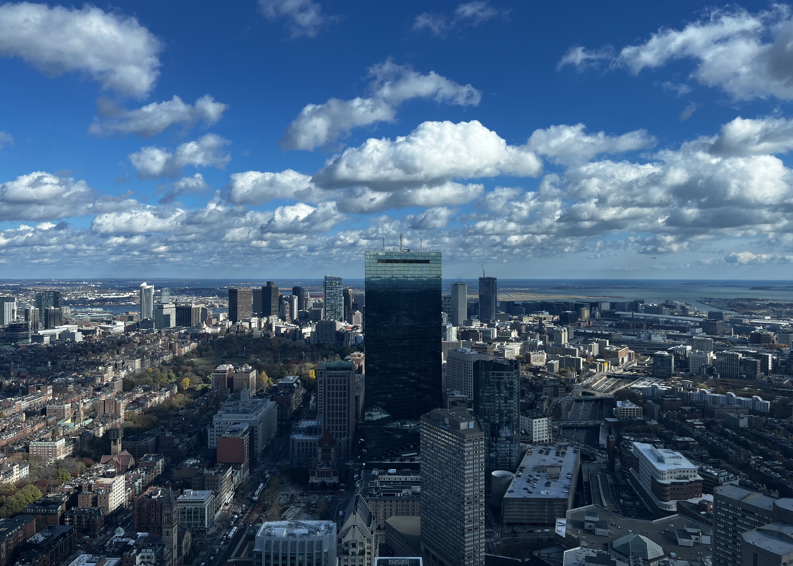
Possibilities
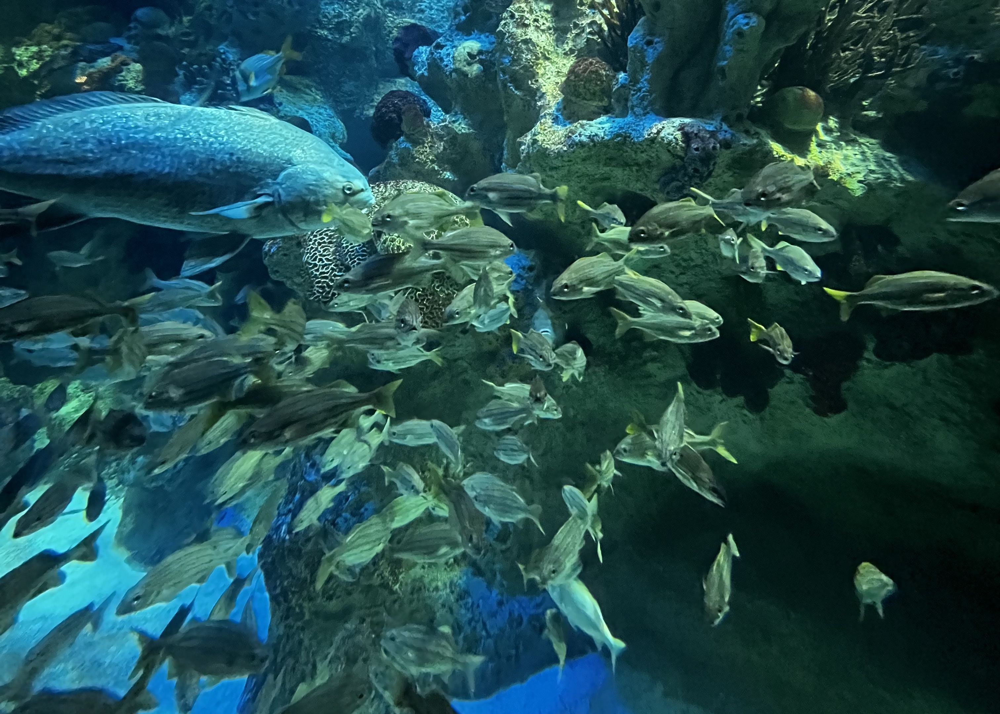
Song of the Fish
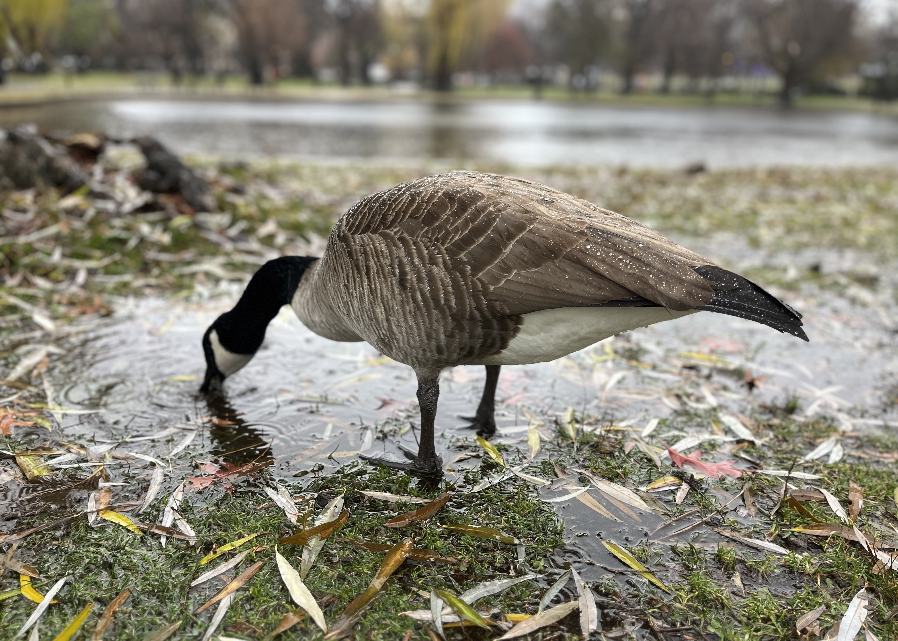
Wonders of Life
Sound Design for Video Games
Live Performances of My Works
Possibilities, Performed by the Berklee World Strings